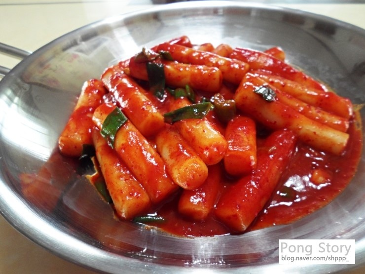

- 떡볶이
- 계란찜
- 짜장라면
떡볶이

떢볶이를 싫어하는 사람은 거의 없다.
그래서 지금부터 떡볶이만드는 법을 알려주려고 한다.
재료
- 물2컵(종이컵기준)
- 고추장 2스푼
- 고추가루1.5스푼
- 간장2스푼
- 설탕2스푼
- 떡 2컵(종이컵기준)
이렇게 준비했으면 나머지 재료는 먹는 사람 마음대로이다.
어묵을 넣든, 소시지를 넣든, 캡사이신을 넣든(1인분에 반스푼에서 한스푼이 적당) 취향대로 넣으면된다.
물과 떡을 넣고 센불에서 88끓여줍니다.
물이 충분히 끓으면 나머지 재료들을 모두 넣습니다.(냉동만두같은 것들은 미리 넣어줘야 익습니다.)
마무리로 파나 깨등을 뿌리면 더 좋습니다.
이렇게 몇분 끓이면 맛있는 떡볶이가 만들어집니다.
이미지 출처 : 만개의 래시피